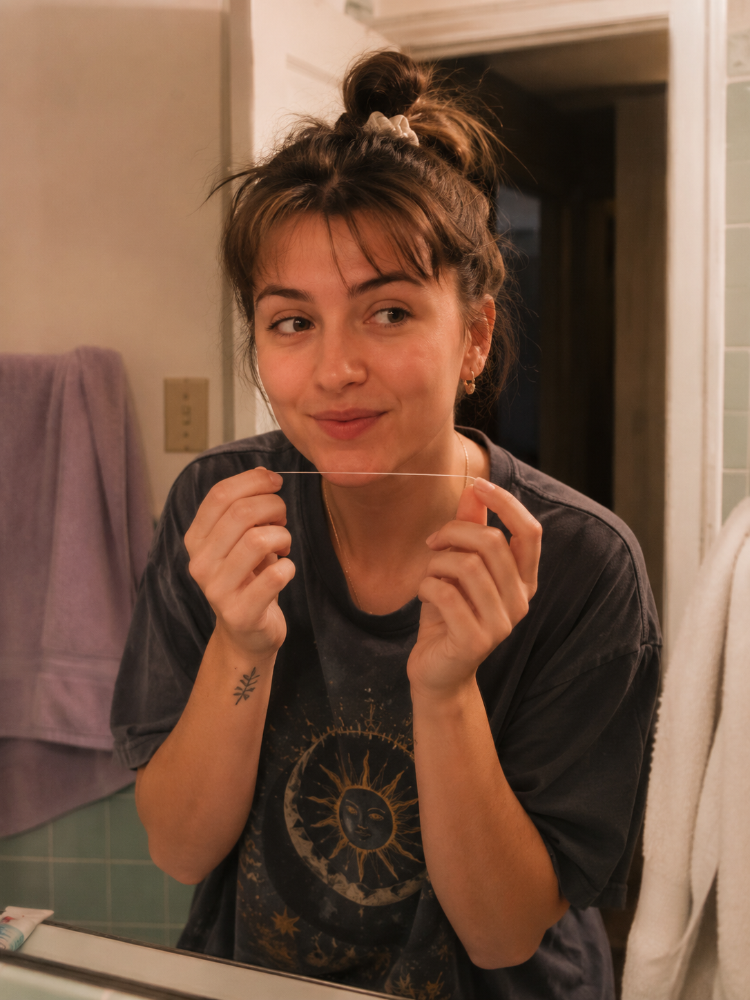
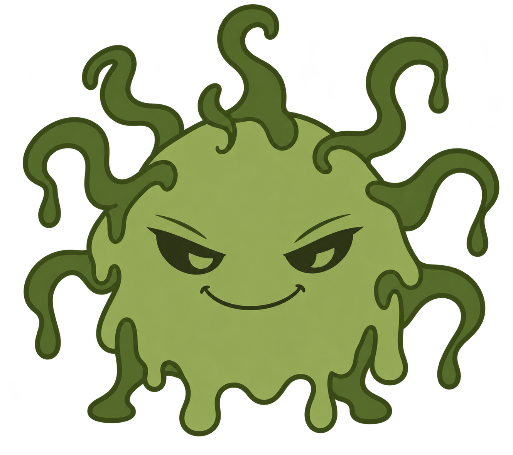
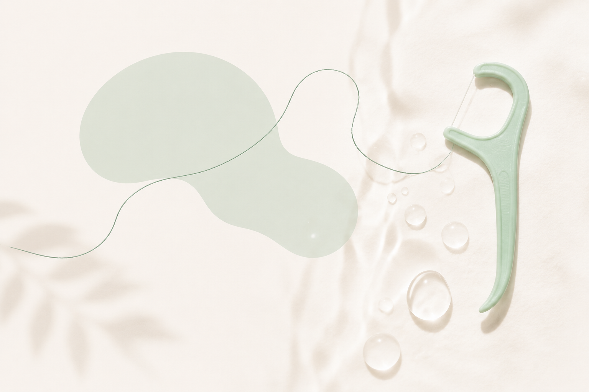
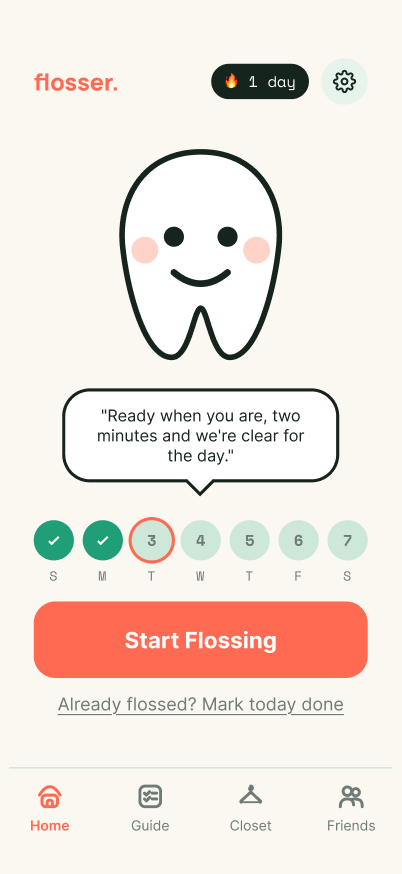
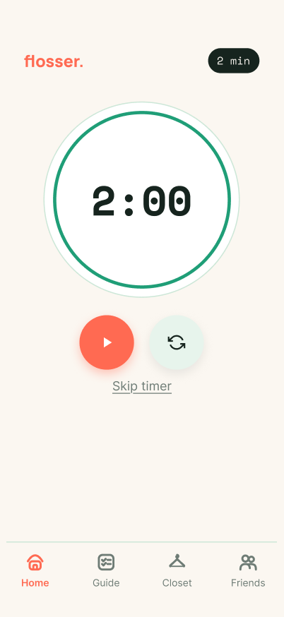
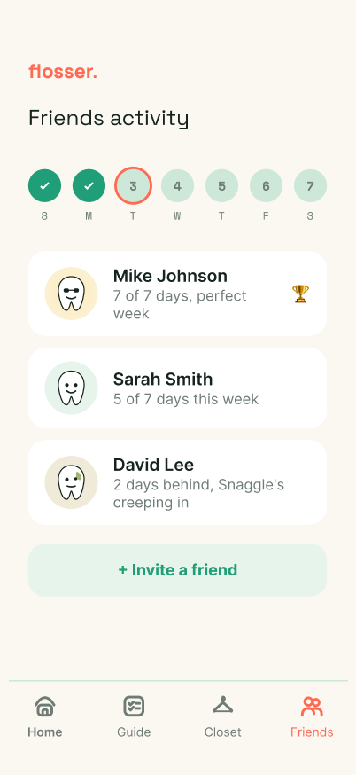
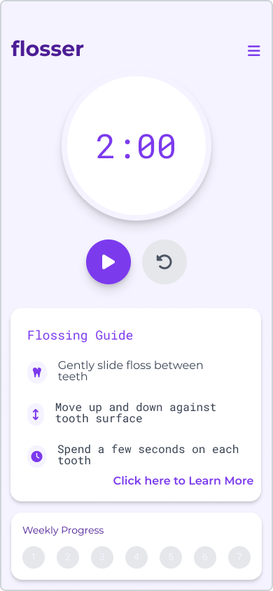

A tiny daily habit, finally made easy to keep. Reminders, a two-minute timer, and a streak that keeps counting.
"I keep floss at my desk, because I forget so often at night. Hearing friends and family talk about skipping it, and catching myself doing the same, made me realize this is common, and overlooked."
I like designing from real behavior and small daily frustrations, turning them into low-pressure, realistic habits that survive the version of you awake at 11pm.
Cite forgetfulness as the reason they skip flossing
Admit laziness gets in the way, even when they know better
Of people floss daily, per the American Dental Association
Survey respondents, on what actually gets in the way
Built on the cue-routine-reward loop from Charles Duhigg's The Power of Habit.
Make the habit easier to remember without creating notification fatigue. One default reminder.
Missing a day shouldn't erase what someone already built. The streak holds, it never resets to shame.
Chip and cosmetic rewards give the habit a visible, ongoing sense of progression.
Charles Duhigg, the cue-routine-reward loop framework behind Flosser's reminders and rewards.
Judah, Gardner & Aunger, the psychological determinants of why flossing specifically is hard to stick with.
Stanford Behavior Design Lab, tiny consistent behaviors become habits when tied to triggers and emotion.
Text-message reminders and progress tracking, simple and accountable.
Toothbrush timer and full dental routine tracking, clear guidance built in.
This app helps people with flossing problems to motivate them to pick up the floss and just use it.
Never or rarely floss at all. For more than a third of respondents, this app is not a reminder. It is the first thing that has ever asked them to start.
Forgetting is the top answer by a wide margin, which is the one a reminder can actually reach. It is why the first thing Flosser does is remember for you.
What I was trying to learn: why so many people struggle to floss regularly, whether it's forgetfulness, low motivation, not knowing proper technique, or just not seeing the point.
"Primary obstacles that hindered the adoption of ideal oral health behaviours included limited knowledge, fatigue, busy schedules, and financial constraints."
Springer, Public Health journal, 2025
Forgetfulness, rigid apps, wanting a nudge rather than a lecture: these patterns became Emily.

"I feel better knowing I didn't skip tonight, my streak keeps me on track."
Long workday ends, and flossing is the easiest thing to skip.
A reminder lands at exactly the right moment.
She opens Flosser instead of scrolling past it.
A quick tutorial reminds her of proper technique.
The 2-minute timer keeps her from rushing.
Her streak ticks up, and she actually feels good about it.
The first build was pastel lavender on white, the same silhouette as every wellness and period-tracker app. Mint Thread is built around the actual color of a floss spool, and the coral it warns with.
Flosser was designed around one idea: small actions become habits when they feel easy, rewarding and consistent.
Built on the cue–routine–reward loop from Charles Duhigg's The Power of Habit.
Real bathroom moments, photographed the way they actually happen.

No alert red. Nothing in the app is allowed to look like a failure state.
Soft shapes for a soft habit. Round, approachable, easy to live with.
Chip's smile, the streak dots and the timer ring are all drawn from the same few curves. Nothing in the interface has a hard corner.

Violet on white read as clinical to me, closer to a medication tracker than a habit worth keeping, so I left it behind.
Sampled from the original prototype.
Task: build a consistent flossing habit by setting reminders and tracking progress.
Opens the app to Chip, defaulted to a daily reminder, no setup screen in the way.
Reads a quick how-to-floss guide.
Starts the 2-minute flossing timer.
Chip reacts, the streak thread fills in for the day.
Shares with friends to stay accountable.
Outcome: the habit has started.
Measurable outcome: did the user complete a session with the timer and begin building a daily habit?
Flossing days now live in Settings, defaulted to every day, rather than gating onboarding. Someone building a daily habit shouldn't have to configure it first.
Kathy, Xally, and Isabella, in one session, talking through their real flossing habits.
Illustrative target, not a measured result
~2 nights/week typical → 6 nights/week goal
nights a week, typical to target. Not a measured result yet, the number Flosser's reminders, timer, and streaks are built to close.

Opens straight to Chip and today's streak, no setup screen in the way.

A two-minute timer so you don't rush, guide open the whole time.

See how friends are keeping up with their streaks, so you can hold each other accountable.
The first working version proved the loop worked. It didn't yet make anyone want to open it.

There wasn't a real home screen yet. The timer and guide doubled as one.
One screen, one job: open Chip and start flossing.
Four sections used in a two-minute session shouldn't hide behind a menu icon.
Progress and Friends got split into their own tabs instead of competing for space.
The cue-routine-reward loop needed a face carrying the "reward" half. Chip became that.
Purple reads as productivity software. Cream, mint, and coral read as a habit worth keeping.
"4/7 days" became "a few days behind, Snaggle's creeping in", so friends' progress now has tension.
The old home screen doubled as the timer. The new one gives you a reason to press start.
Four tools carry the whole idea: notifications to remind you, a timer so you don't rush, friends so you don't want to embarrass yourself by skipping, and Chip, a mascot who gives you a reason to come back tomorrow.
Open full prototype in Figma →Missing a day feels like personal failure.
Give the consequence to Snaggle instead.
A reason to return, without feeling blamed.
Jealous of every smile that isn't his. Snaggle spreads grime whenever Chip is left unguarded, but consistency is his weakness, every flossing session pushes him back.
Based on consecutive missed days. The grime happens to Chip, and he wears it patiently.
Three signals, three speeds. The streak holds where you left it, so nothing already earned is taken back. Snaggle moves in weeks, slow enough that a bad patch is never a verdict. Friends see your progress, and that is the part that actually keeps people honest.
Every state is reversible. One ordinary session, and Chip starts clearing again.
Purely cosmetic. Missing a day never costs someone something they already earned.
A concept sheet of early explorations for where the closet could go next.
Flosser's identity isn't a logo and a palette. It's two characters and one rule about who gets blamed.
He dulls when the habit slips and brightens when it returns. He never reports a number and never asks where you've been.
Skipping is what lets him in, so the user stays accountable. The app just never says it out loud. Every consequence lands on him and on Chip, and he is a nuisance you push back, which is the whole trick.
Grime lands on Chip, never in a sentence pointed at the user. Leaving him unguarded is what let Snaggle in.
The original idea was a flossing reminder. The final product became a habit system: remember, act, reward, return. Every screen exists to move someone through that loop without friction or guilt.
A visually clear interface can still fail when the interaction model doesn't match what someone expects.
Chip and Snaggle taught me gamification can create urgency without making the user feel guilty.
When the behavior itself takes under two minutes, even one unnecessary decision is a reason not to do it.
Testing Chip and Snaggle with a larger group to see if the mascot system holds up past the novelty of a first session, and building out Friends into a real accountability feature rather than a single share screen.